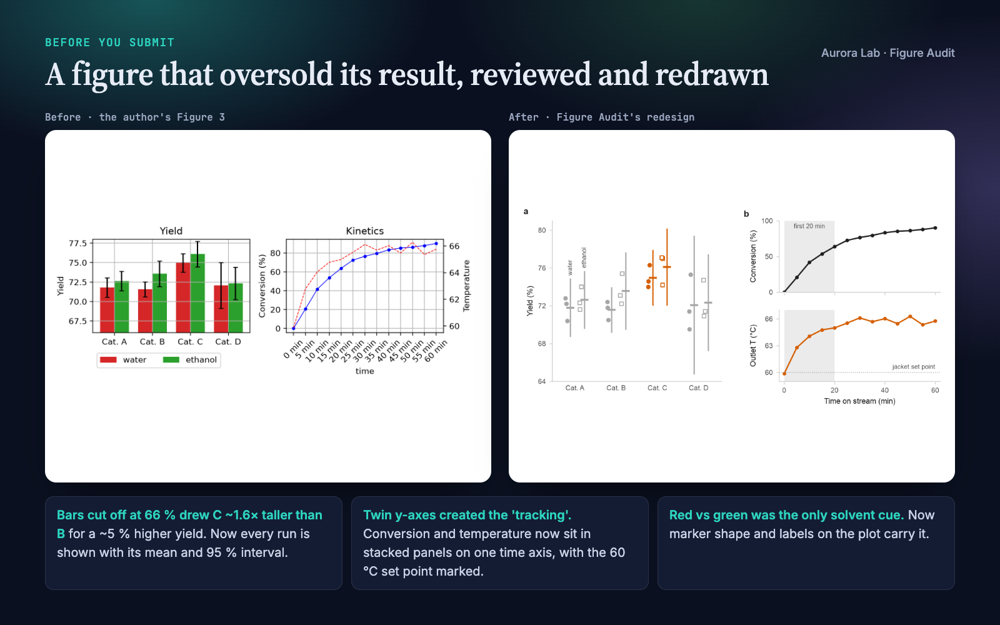
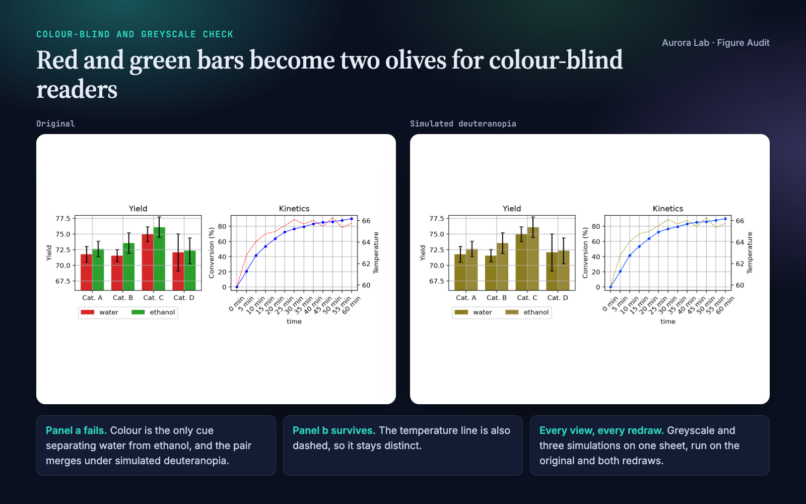
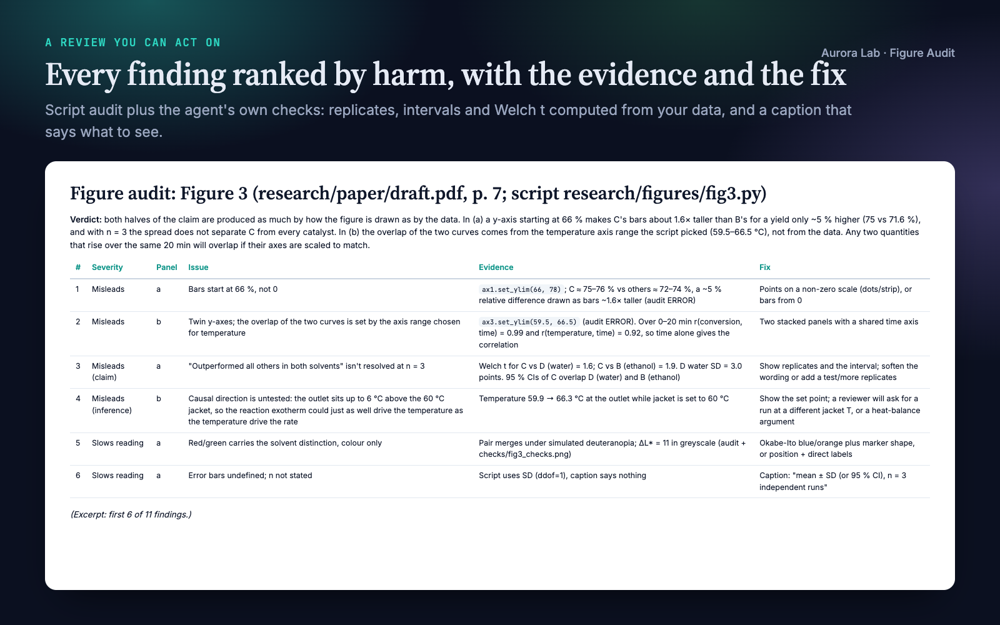
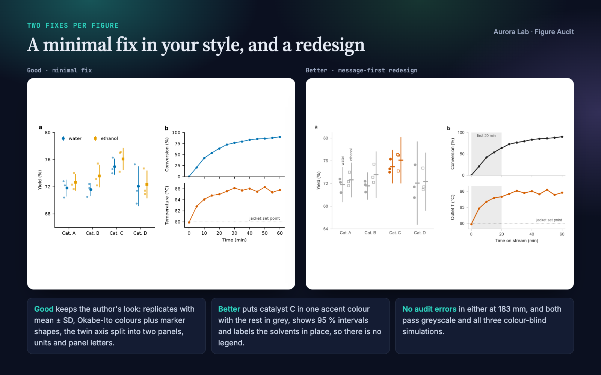
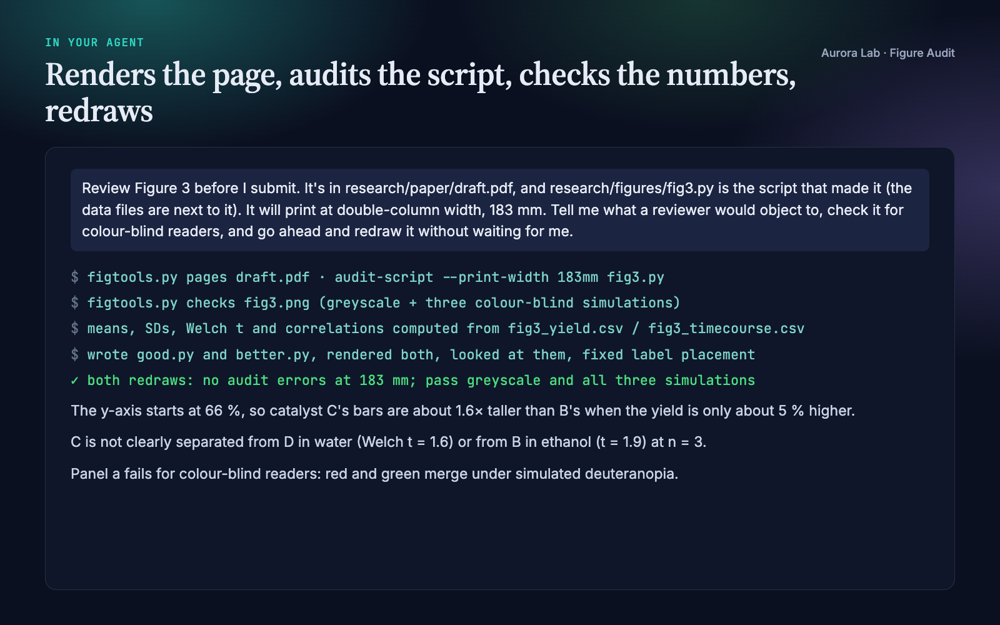

Overview
A reader takes in a figure's shape before its caption. A bar axis that starts at 66 %, or a second y-axis scaled until two curves overlap, makes a claim the text then has to defend in front of reviewers. Figure Audit turns your agent into a careful figure reviewer that:
- Pins down the claim each figure supports, from its caption and the sentence that cites it.
- Audits the plotting script automatically, without overwriting your figure files: twin axes, bars not starting at zero, legends far from the data, crowded or rotated ticks, missing units and panel letters, error bars to define, and text size at the width the figure will print.
- Checks colour-blind and greyscale readers with simulated views on one sheet and a pairwise check of the data colours.
- Checks the numbers behind the claim when the data are there: replicates, intervals, how much an axis exaggerates a difference.
- Ranks every finding by harm with its evidence and a fix, and says which came from the automatic audit and which are judgement.
- Redraws the figure twice: Good, a minimal fix in your own style, and Better, a message-first redesign. Both are re-audited and inspected before you see them.
Which Aurora Lab figure skill? Paper Figures designs and draws figures from your data. Figure Editor assembles finished images into one multi-panel figure. Figure Audit reviews figures that already exist and the scripts behind them. Each works on its own; they pair well.
Quick start
- Get the skill from Agensi and add it to your agent (Claude Code, Codex CLI, Cursor, Gemini CLI or any agent that loads SKILL.md skills).
- Have Python 3.10+ with numpy, Pillow and matplotlib in the project's environment. For PDF input, also poppler's
pdftoppmor thepymupdfpackage. - Ask in plain words.
Example requests:
- "Review Figure 3 before I submit; it's in research/paper/draft.pdf and the script is research/figures/fig3.py."
- "Is this plot misleading? figures/dose_response.png"
- "Check all the figures in manuscript.pdf for colour-blind safety and print legibility at 89 mm."
- "I'm refereeing this paper: draft comments on its figures for my report."
What you get
Everything below comes from a real run: a fresh agent session with only this skill installed, given the request in the session card. The inputs were ours and deliberately flawed: a synthetic catalyst-screen figure with seeded data, the matplotlib script that drew it, and a two-page manuscript excerpt citing it. Planted problems included bars cut off at 66 %, red versus green as the only solvent cue, undefined error bars and twin y-axes. The run found all of them, plus two we had not planted: the figure was embedded in the PDF at only 100 ppi, and the temperature rise above the jacket set point could be the reaction heating the reactor, which undercuts the text's heat-transfer argument. Every number it quoted (bar-height ratio, Welch t, correlations) checks out against the data.





How it works
- Collect. Images are used as they are; PDF pages are rendered (so vector figures are captured); small panels are cropped and enlarged; plotting scripts are run headless under the audit, with a PNG of each figure saved for viewing.
- Claim. The agent writes down what each figure is meant to show, from the caption and the citing sentence, or marks it (inferred).
- Check. It works through a checklist in five groups (integrity, chart form, construction, colour, message) by looking at the image, then makes the greyscale and colour-blind check sheet and uses the script audit's numbers. Audit items are confirmed on the image, not passed on blindly.
- Rank. Findings are sorted into four bands: misleads, slows reading, clutter, polish.
- Redraw. With the script and data it writes
good.py(minimal fix) andbetter.py(redesign, starting from a short style block and the bundledplotkittechniques), runs both, audits them, looks at them and fixes what looks wrong. Both scripts are self-contained: they run with numpy and matplotlib alone. With only an image, it specifies the redesign and asks for the data. - Report.
report.mdholds the claim, verdict, the ranked table, what works, both versions, a caption suggestion and the checks run. The agent checks its verdict against the table before answering.
What the script audit flags
| Check | Why it matters |
|---|---|
| Twin y-axes in one panel | Where curves cross and how steep they look depend on two ranges the author chose |
| Bars not starting at zero, bars on a log scale | Bar length must be proportional to the value |
| Bars with error bars; error bars present | Small samples hide behind summaries; the caption must define the interval and n |
| Legend (and legend outside the panel) | Direct labels are read faster than a key |
| Grid lines, closed frames, thin data lines | Ink that competes with the data |
| Rotated or crowded tick labels | Sideways reading, needless precision |
| Missing axis titles or units; no panel letters | The caption and text cannot refer to what they need |
| Colour pairs that merge under simulated protanopia, deuteranopia or tritanopia, or have similar lightness | Colour-blind readers and greyscale prints lose the distinction |
| More than five hues; 3D axes; pie charts | Hard to decode, distorted magnitudes |
Text below the minimum at the printed width (--print-width 89mm) |
A figure drawn large and shrunk for print loses its labels |
The audit runs on matplotlib figures. Judging the claim, the axis range, the statistics, the caption and the redesign is the agent's work, and the report labels it as such.
Files it reads and writes
| Path | |
|---|---|
| Reads | the figures you name (PNG, JPEG, TIFF, PDF pages), e.g. in research/figures/; the manuscript, e.g. in research/paper/; the plotting script and the data it reads |
| Writes | one folder per figure: research/reviews/figure-audit-<figure>/ with a research/ folder, otherwise figure-audit-<figure>/ next to the figure |
| In that folder | report.md, checks/ (page renders, crops, greyscale and colour-blind views, check sheets), good.py and better.py with their PNG/PDF output |
It never modifies, moves or overwrites your figure, script, data or manuscript. Auditing a script runs it; its savefig calls are intercepted, so its figure files are not rewritten.
Command line and helper API
Your agent runs these for you. figtools.py is a single self-contained file: it runs from the skill's scripts/ folder or with the file on standard input (python - checks fig3.png out/checks), and writes only the outputs you name.
python figtools.py pages draft.pdf out/checks --first 7 --last 7
python figtools.py checks fig3.png out/checks
python figtools.py audit-script --print-width 89mm --render out/checks fig3.py
python figtools.py crop page-7.png out/checks/panel_a.png 0.1 0.2 0.5 0.5
| Command | Purpose |
|---|---|
pages |
Render PDF pages to PNG (needs pdftoppm or pymupdf) |
crop |
Crop by fractions of the image and enlarge, to inspect one panel |
grey, cvd |
Greyscale copy; simulated protanopia, deuteranopia and tritanopia |
checks |
All four views plus a single comparison sheet |
audit-script |
Run a matplotlib script headless and audit each figure (--target paper/wide/slide/poster, --print-width, --render) |
The redesign scripts your agent writes for you are self-contained. Each opens with a short style block (quiet axes, a colour-blind-safe palette with one accent colour, TrueType fonts in the PDF, a 95 % confidence-interval helper and a save() that writes PNG and PDF) and runs with numpy and matplotlib alone. Nothing from the skill is copied into your project, so the scripts keep working after you share the project or remove the skill.
The bundled plotkit kit is where the redesign techniques come from. Your agent reads the helper a figure needs and writes those few lines into the script; it imports plotkit only for throwaway mock-ups:
| Function | Purpose |
|---|---|
use_style(target), figure() |
Quiet axes, colour-blind-safe palette, sizes for paper, slide or poster |
strip(ax, groups, summary="mean_ci95") |
Every replicate with mean and 95 % CI, SD or SEM |
dots, bars, slope, hist, small_multiples |
Chart builders that keep encodings honest |
label_lines, emphasise, mark |
Direct labels and one accent colour |
The automatic checks also live in figtools.py: audit(fig, print_width=) and report(issues) work on any matplotlib figure from Python, and audit-script applies them to a script.
Colour-blind simulation
The colour-blind views simulate full protanopia, deuteranopia and tritanopia with standard linear-RGB matrices. The audit compares every pair of data colours in a panel and flags pairs whose CIELAB difference collapses under a simulation, or whose lightness is so close that a greyscale print loses them. Milder colour-vision deficiencies are more common and less severe than the simulations, so a figure that passes all three is safe for most readers; a figure that fails one needs a second cue such as marker shape, line style or a direct label.
FAQ
How is this different from Paper Figures and Figure Editor?
Paper Figures designs and draws figures from your data. Figure Editor assembles finished images into one multi-panel figure. Figure Audit reviews figures that already exist and the scripts behind them, ranks what is wrong and redraws them. Each works on its own.
What do I need installed?
Python 3.10+ with numpy, Pillow and matplotlib. For PDF pages, poppler's pdftoppm (brew install poppler, apt install poppler-utils) or the pymupdf package. No network access.
Which checks are automatic?
The script audit and the greyscale and colour-blind images. What the figure claims, whether the range or statistics support it, the caption and the redesign are the agent's judgement, and the report says which is which.
Can it review a figure from R, Excel or Prism?
Yes, from the exported image or PDF: everything except the automatic script audit applies. Redraws are made in matplotlib from your data.
Can I use it when refereeing?
Yes. Findings are phrased as observations with a suggested remedy. The skill makes no network calls, but your agent's model provider sees what the agent reads, as with any agent task, so follow your journal's confidentiality rules for manuscripts under review.
Will it change my files?
No. Everything it writes goes into a separate review folder, and nothing from the skill is copied into your project.
Does it work through Agensi's MCP connection, without a skill folder?
Yes. Your agent loads the instructions and each helper file on request, runs the helpers in-session and writes only the review folder into your project. Version 1.1 was tested this way.
Limitations
- It reviews existing figures; it does not design figures from scratch or assemble panels.
- The automatic audit covers matplotlib only. Figures from other tools are reviewed from their image or PDF.
- Auditing a script runs it: audit only scripts you trust. Files it writes other than figures are not intercepted.
- Colour-blind views simulate full dichromacy; they are a strong screen, not a test with real readers.
- With only an image, the redesign is specified rather than drawn, and values are never read off pixels.
- Minimum text sizes differ between venues; check your journal's current author guidelines.
Changelog
1.1.0 · October 2026 · Works when the skill is delivered without a local folder (Agensi's MCP connection): helpers run in-session and write only their outputs, the automatic audit moved into figtools.py so each helper is one self-contained file, redesign scripts you keep carry a short inline style block instead of importing plotkit, and no skill file is copied into your project.
1.0.0 · October 2026 · First release.